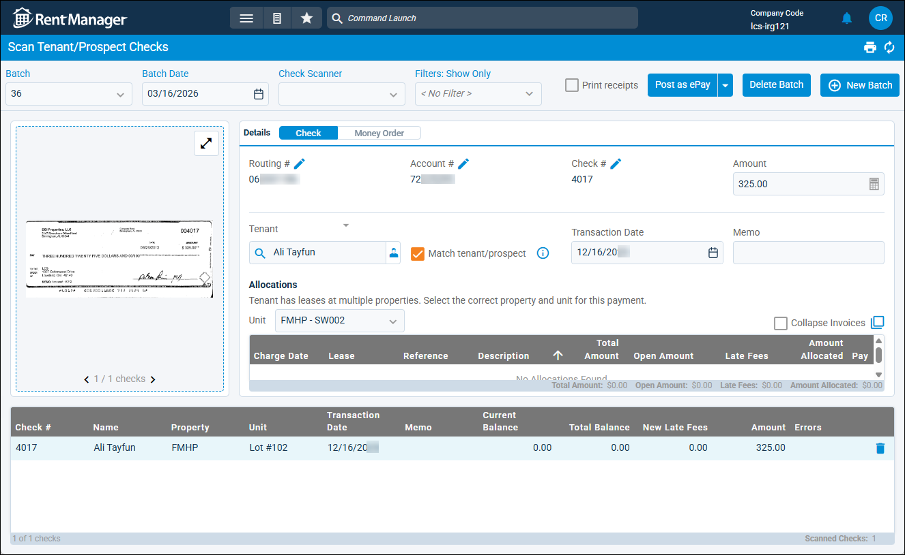
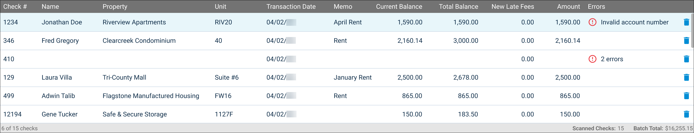

Source: https://rmxhelp.rentmanager.com/MicroContent/Resources/MicroContent/Improve-Search/scan-checks.htm
Scan Tenant/Prospect Checks
Rent Manager allows you to scan and record multiple checks or money orders in a batch and apply them to tenant or prospect accounts efficiently from one page. If you have Zego ePay enabled, then the payments you scan and record in Rent Manager can be processed using ePay.
More Information
Before scanning checks, you must first set up your Epson check scanner with Scan Manager. For more information, refer to Set Up Epson Check Scanner. LCS offers Epson single-feed and multi-feed check scanners to meet your check scanning needs. If you are already using a TellerScan TS 240 or Panini Vision X50 scanner for your check scanning, these models are also supported and compatible with Rent Manager check scanning.
Additionally, the Optical Character Recognition (OCR) feature for check scanning — which converts the image text of your checks into machine-readable text — is part of the licensed feature for Smart Bills and Smart Receipts. For more information, contact your sales representative at sales@rentmanager.com.
Related Privileges
| Group | Privilege | Column |
|---|---|---|
| Receivables | Take tenant payments | Enabled |
| Banks/Checks | Scan batches of checks | Enabled |
For more information, refer to Control User Access.
Step 1: Scan Check Batch
To start scanning a batch of checks using your Epson check scanner, do the following:
-
Go to
 arrow_forward Receivables arrow_forward Payments arrow_forward Scan Tenant/Prospect Checks.
arrow_forward Receivables arrow_forward Payments arrow_forward Scan Tenant/Prospect Checks.
-
At the top, enter or select information in the available fields.
Field Description Batch
For scanning a new batch of checks, this field displays <New Batch>.
To edit an existing batch, select that batch number from the drop-down list.
More Information
If you open the page to an in-progress batch but need to create a new batch of scanned checks, click
 New Batch. The existing batch is saved to complete later and the page refreshes for a new, empty batch.
New Batch. The existing batch is saved to complete later and the page refreshes for a new, empty batch.Batch Date
The date on which the batch of check payments is scanned and processed. Today's date displays by default.
Check Scanner
The Epson check scanner you are using to scan checks for this batch.
Related Preferences
By default, the check scanner set as your default scanner in personal preferences is selected. For more information, refer to Check Scanning (Personal Preferences).
Filters: Show Only
Allows you to include or exclude scanned checks that meet certain criteria, such as errors or partial amounts.
Check or uncheck any of the available options described below.
Errors
If checked, include scanned checks that return one or more errors, such as invalid routing or account numbers, missing amounts, or no linked account.
Partial Payments
If checked, include scanned checks that are written for an amount that is less than the tenant or prospect's current outstanding balance.
Not Processed
If checked, include checks that were not posted when this check batch was processed and posted, meaning they have not been added as payments to any accounts. This filter applies only to existing check batches, not new check batches.
-
Place checks and money orders into the scanner and wait for the scanner to feed them through.
More Information
The number of seconds before the scanner starts feeding checks through depends on your Scan Manager application's settings in the Scan Mode field. If the option Scan when "Scan Checks" button is clicked is enabled, the scanning does not start until you click Scan Checks in Scan Manager.
As the scanner reads the checks and money orders, it imports that payment information and an image of the check into the Scan Tenant/Prospect Checks page in Rent Manager.
Step 2: Verify Payment Details

After scanning your checks and money orders, each scanned payment displays in a list at the bottom of the page. You can review the information that was scanned for each payment to ensure it scanned accurately before you post the payments to the accounts. Additionally, you can view if any of the scanned checks encountered errors.
The available columns to review are described below.
| Column | Description |
|---|---|
|
Amount |
The amount the payment is written for. The amount that populates in this column depends on your system preferences and whether or not you have purchased a license for Optical Character Recognition (OCR) for check scanning. Related Preferences If you have purchased a license for OCR for check scanning, the amount read by the scanner is automatically entered in the Amount field. If the option Auto fill tenant balance when check scanner does not read amount is enabled in system preferences and the scanner fails to read the amount from the check, the tenant’s current balance populates instead. If you have not purchased the license for OCR, and the option Auto fill tenant balance when scanning checks is checked in system preferences, this field automatically populates with the tenant or prospect's current outstanding balance, as shown in the Current Balance column. If unchecked, the amount $0.00 populates. For more information, refer to Check Scanning (System Preferences). |
|
Check # |
For check payments, the check number read by the scanner. For money orders, the serial number read by the scanner. |
|
Current Balance |
The tenant or prospect's outstanding balance of unpaid charges as of today's date. |
|
Errors |
If there were any issues with scanning the check, an error displays. Errors may occur if the scanner fails to detect the routing number, account number, or payment amount. Errors can also occur if the payment was not matched to a tenant or prospect account. More Information An error may also display if a tenant has payments, partial payments, or check payments blocked for their account. For more information, refer to Limit Payment Options for Tenants. |
|
Memo |
An optional note about what the payment was for, as read by the scanner. Memos display on the tenant or prospect's View Transactions pop-up in the Comment column. |
|
Name |
The tenant or prospect account that submitted the payment. |
|
New Late Fees |
Any daily (or per-day) late fees accumulated for the open charges based on the date the charge was posted and the payment's Transaction Date. |
|
Property |
The property associated with the tenant or prospect that made the payment. |
|
Total Balance |
The tenant or prospect's total outstanding balance of all unpaid charges, including charges dated in the future. |
|
Transaction Date |
The date on which the check is scanned. If scanning additional checks to an existing in-progress batch, each individual check has differing transaction dates based on the date they were scanned. |
|
Unit |
The unit associated with the payment. |
Step 3: Edit or Correct Payment Information
If any checks in the list displays warning messages in the Error column, or you notice any other inaccurate details, such as an incorrect dollar amount in the Amount column, you can select that check or money order in the list and make the needed corrections. Additionally, for payments that do not cover the current balance, you can choose which charges to allocate the payment to.
To edit the details of a scanned payment, do the following:
-
Select a check or money order from the list.
-
In the Details tile, review and edit the information in the available fields.
Field Description Account #
The payee's bank account number from which the funds are being deducted, as read by the scanner.
If the incorrect number was read, click
 to enter the correct number.
to enter the correct number.Amount
The amount the check or money order is written for. You can edit this field as needed.
Check #/Serial #
For check payments, the check number read by the scanner. For money orders, the serial number read by the scanner.
If the incorrect number was read, click
to enter the correct number.Check/Money Order
In the tile header, verify the correct payment type is selected: Check or Money Order.
Memo
An optional note for this payment, as read by the scanner. You can edit this field as needed.
Routing #
The bank's numerical identification number for the purpose of processing money transfers, as read by the scanner.
If the incorrect number was read, click
to enter the correct number.Tenant/Prospect
The tenant or prospect account to apply the payment to.
If the option Match tenant/prospect is checked, then future payments with the same Routing # and Account # combination automatically link to the selected tenant or prospect account.
Transaction Date
The date on which the check is scanned. If scanning additional checks to an existing in-progress batch, each individual check has differing transaction dates based on the date they were scanned.
-
In the Allocations section, the tenant's open charges display.
-
Enter or edit the information in the available columns.
More Information
To preallocate the remainder of an overpayment to specific charge types, click
 to open the Allocations pop-up. In the Preallocations tile, you can enter the amount of the payment that should be applied to a future charge of the specified charge type.
to open the Allocations pop-up. In the Preallocations tile, you can enter the amount of the payment that should be applied to a future charge of the specified charge type.Column Description Amount
The amount of this payment to apply to the open charge.
Late Fees
Any daily (or per-day) late fees accumulated for the open charges. You can manually add late fees into this column.
Pay
If checked, this payment is applied to the open charge.
-
Repeat these steps for any other payments that need edits or corrections.
Step 4: Post Check Batch
After all your scanned payments are reviewed and verified, you can post the checks and money orders. Each payment processed is applied to the established allocations for the open charges on the associated tenant and prospect accounts.
To post the batch, do the following:
-
Optionally, to generate printable receipts for each posted payment after posting, check Print Receipts.
-
Select one of the following options to post your batch:
Option Description Post as ePay
Related Privileges
Group Privilege Column ePay Perform ePay batch processing Enabled For more information, refer to Control User Access.
Post check or money order payments to the selected accounts and process each payment electronically via ePay.
Warning
Batches processed via ePay cannot be reversed. To undo these payments, each check or money order would need to be refunded individually from tenant accounts' transactions.
Related Preferences
This option is available only if Enable ePay is checked in system preferences. For more information, refer to General ePay (System Preferences).
Post Batch
Post check or money order payments to the selected tenants and prospects on their View Transactions pop-up. Payments must still be deposited to your real-world bank and in Rent Manager.
If ePay is enabled for your database, you can access this option by clicking the drop-down arrow next to Post as ePay and select Post Batch.
More Information
If needed, batches posted this way can be rolled back. However, any late fees charged to the tenant or prospect as part of the batch are not removed. For more information, refer to Roll Back a Posting.
The Post Batch or Post Batch as ePay pop-up displays.
-
Review the batch information summary, then click Post.
Related Preferences
If the option Require confirmation of batch total amount when posting is enabled in system preferences, then a Total Amount field displays on the pop-up. You must enter the total amount of all checks and money orders in the batch to confirm its accuracy before you can click Post. For more information, refer to Check Scanning (System Preferences).
The batch is processed and all check and money order payments in the batch are posted to the tenant and prospect accounts for the specified Transaction Date.